Overall, in this project I did several tasks relating to rasterization of triangles. I used both the line test and barycentric coordinates to find whether points were inside or outside triangles, and then did several different kinds of sampling of textures, including using mipmaps and bilinear sampling. I also looked at supersampling and compared the various pros and cons of each method.
I rasterize triangles in the following way:
My supersampling algorithm is fairly simple:
|
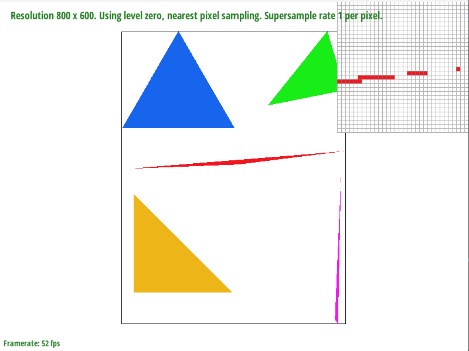
|
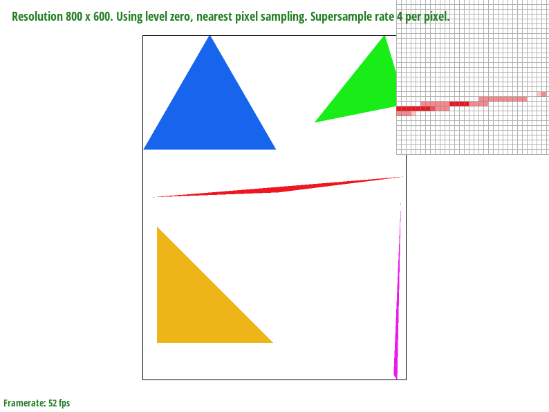
|
|
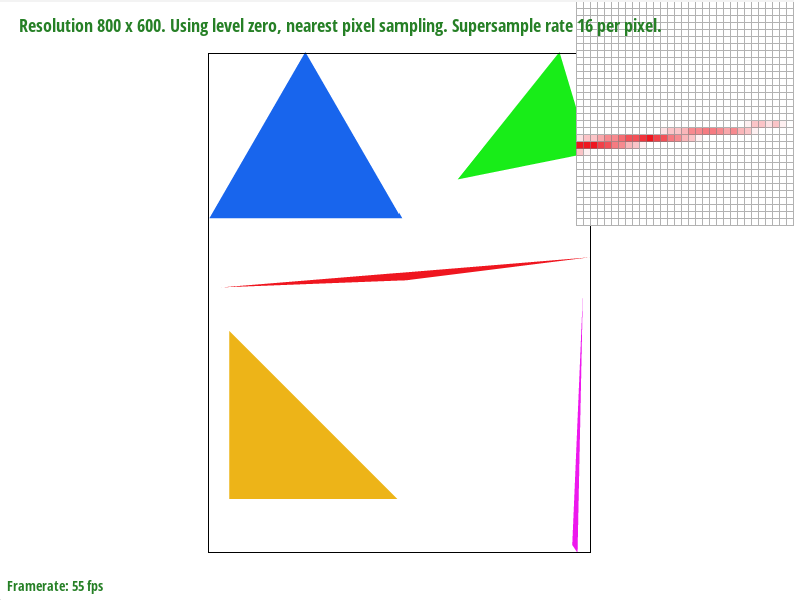
|
The results in basic/test4.svg, above, are observed because the supersampling allows for the skinny triangle to be gradually blended together, as opposed to each pixel being a binary off or on. This allows for greater resolution, as there are more options for the color of each pixel.
In this image, my robot is saluting, and his other arm is to the side.
Barycentric coordinates are a way of plotting a coordinate system in a triangle.
It uses three coordinates, each of which represents how close a given point is to one of the vertices of the triangle.
One of the easiest ways to think about it is that if you were to draw a line from the point to each vertex of the triangle, you would create three areas within the triangle.
The portion of the total area of the triangle that each of these areas cover are the three barycentric coordinates, which always add to 1.
The below triangle illustrates this. Each vertex is a different color (either red, green, or blue), and the gradient represents the gradual shift in barycentric coordinates.
This next image is from test7.svg.
I did pixel sampling in two ways: nearest-neighbor and bilinear.
Nearest-Neighbor Sampling
For nearest-neighbor sampling, the first thing that I did was compute the barycentric coordinates of the pixel in question. If the pixel was inside the triangle, then
I computed the u and v coordinates of the texture using the formula (alpha * u0 or v0) + (beta * u1 or v1) + (gamma * u2 or v2). I then passed this through to
the texture.cpp file, which found the closest texel to the u and v coordinates given, and returned that color.
Bilinear Sampling
For bilinear sampling, I used the same process as nearest-neighbor sampling to generate the u and v coordinates. After this, I computed the four closest texels to this u and v coordinate
in texture.cpp. After doing this, I interpolated the texels' color values using the linear interpolation method described in lecture (taking a weighted average based on the distance
to each point), and returned this color as the color value of the pixel.
The following images are an example of bilinear sampling being clearer than nearest-neighbor sampling, as the text is (slightly) more legible.
|
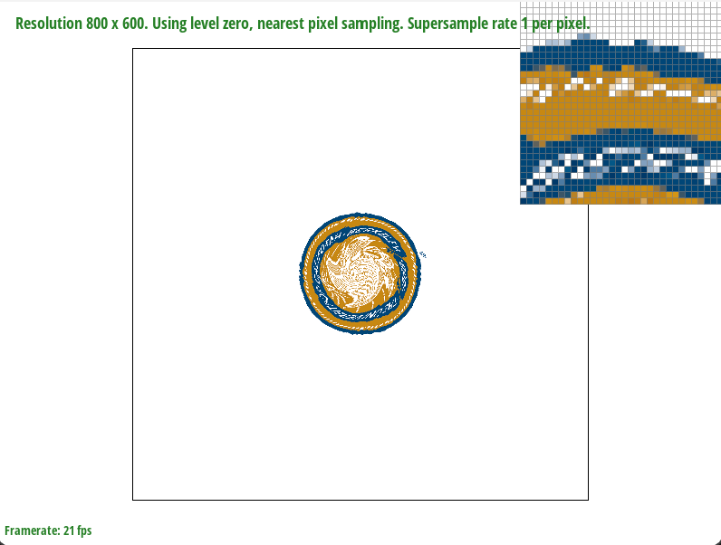
|
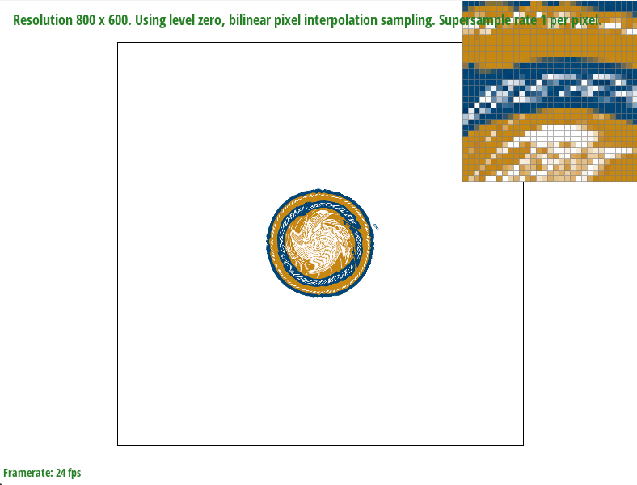
|
|
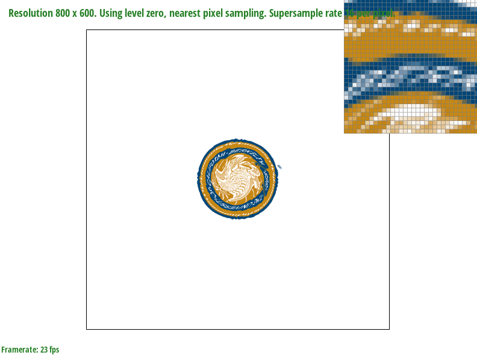
|
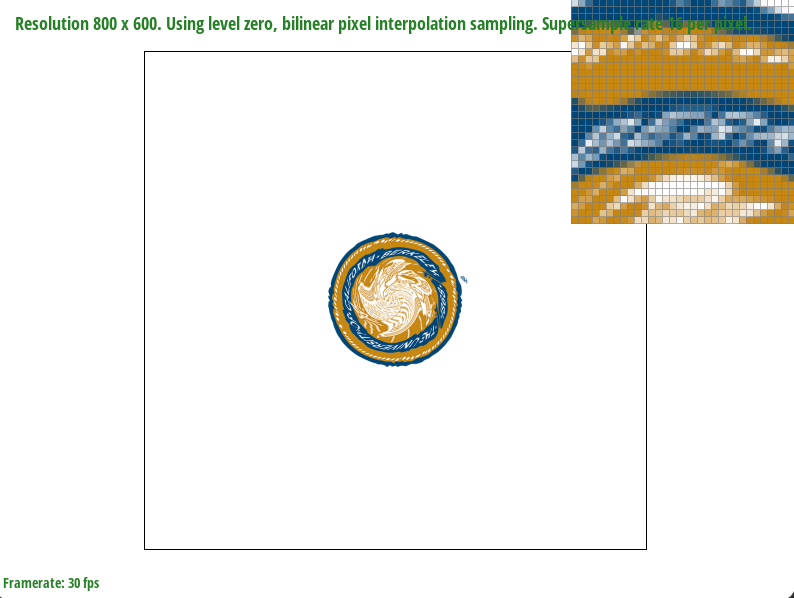
|
I implemented level sampling in the following way:
One major tradeoff between the types of sampling are that the speed is lowest with level-zero sampling, but the quality is also highest. This is similar to the tradeoff between supersampling
with a high number of samples per pixel and a low number - when you have a high number of samples per pixel, you have to use more memory and it is slower, but you get better antialiasing.
With pixel sampling, the major tradeoff is again similar - if you use bilinear sampling, you have to use more memory and sacrifice speed, but you end up with usually a better-looking image.
In contrast, if you use nearest-neighbor sampling, you have worse anti-aliasing but better speed and less memory used.
|
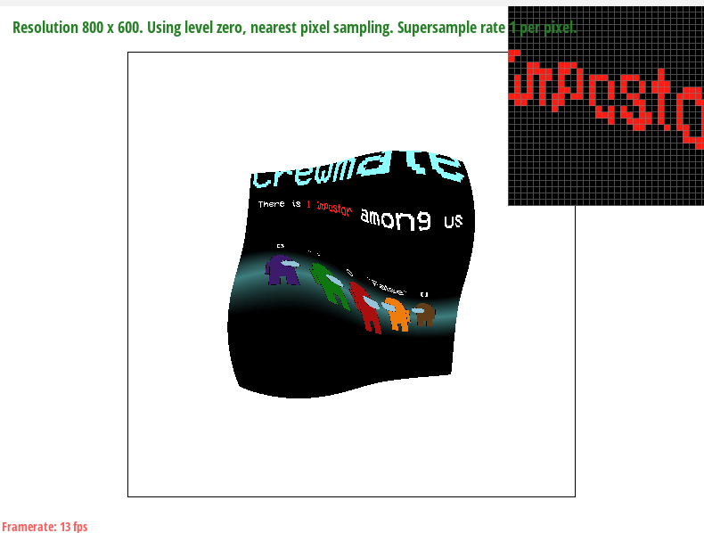
|
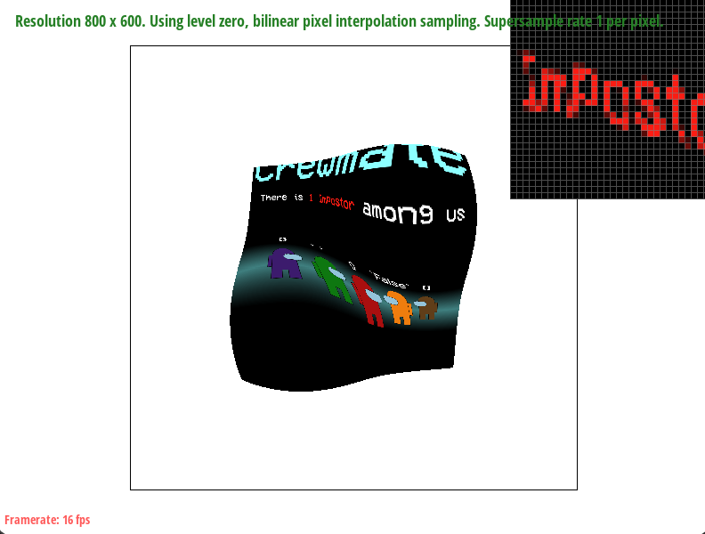
|
|
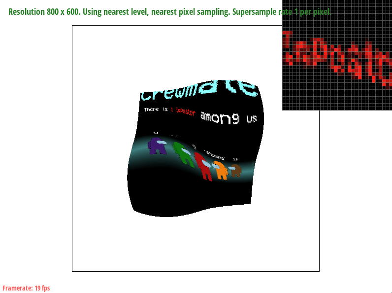
|
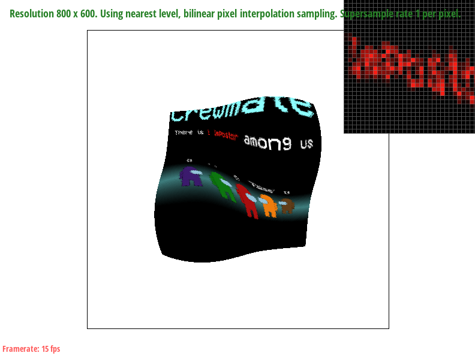
|
It is interesting to note here that the bilinear sampling gives a worse result than nearest-neighbor (in my opinion). I think this could be because this image was generated essentially pixel by pixel (it was my Scheme contest entry back in 61A). Bilinear sampling might be better for images without as hard of edges.
Website link: https://dominicd.me/cs184-proj-webpages/proj1/index.html